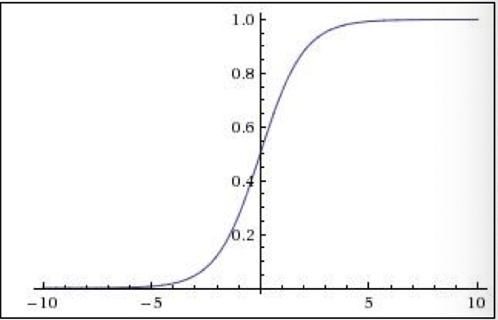
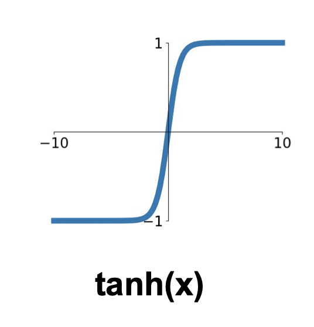
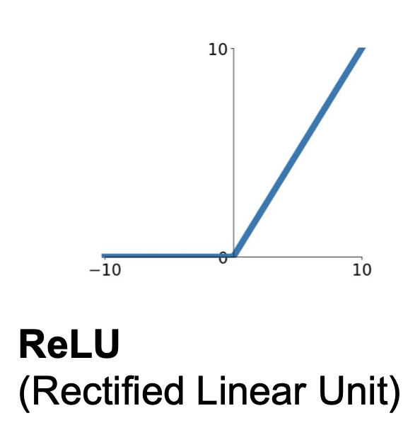
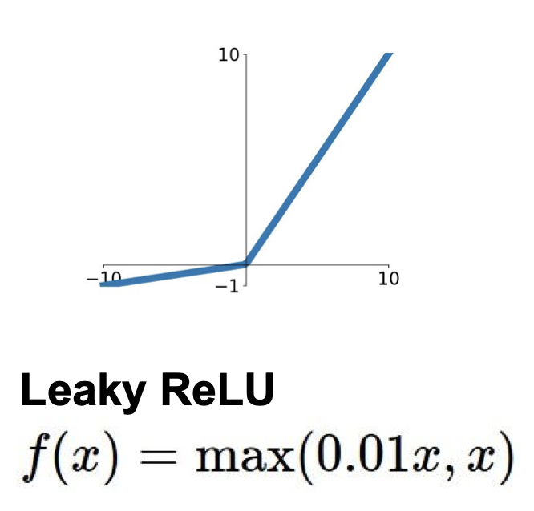
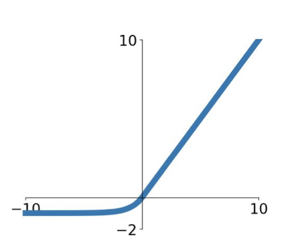
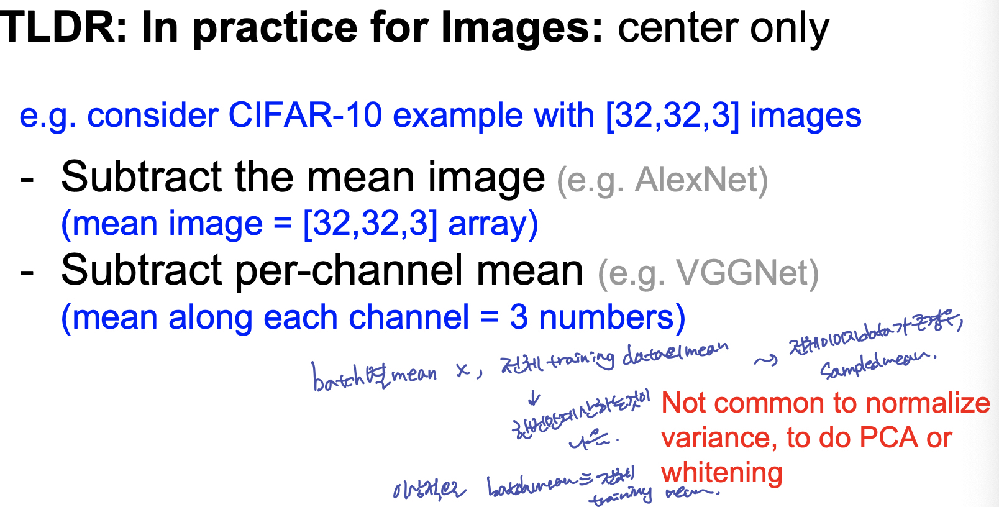
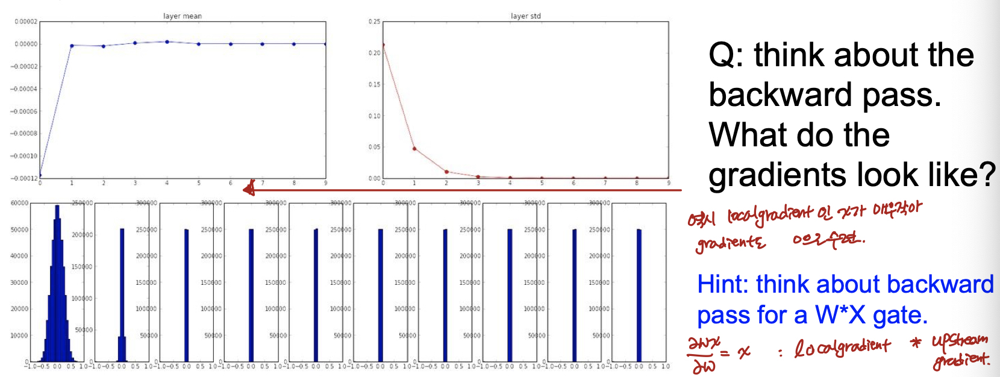
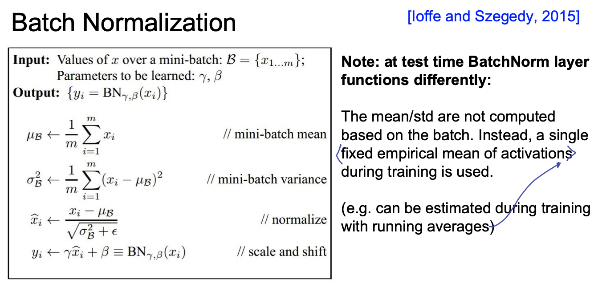

Lecture 06: Training Neural Networks part1
- 이 글은, Standford University 의 CS231n 강의를 듣고 스스로 정리 목적을 위해 적은 글입니다.
1. One time setup
1-1. Activation Functions
Activation Function 마다 각 특성과 trade off 가 있다. 많이 사용되는 activation function 이 있지만, LU 계열의 activation function 은 모두 실험의 parameter가 될 수 있다.
(1) Sigmoid

sigmoid function 의 경우, 수식의 특성상 실수 space 에 있는 값들을 [0, 1] 범위 내로 좁혀 주는 기능을 해, 역사적으로 오래된 activation function 이다. 하지만 다음과 같은 단점이 있다.
- 단점
- 일정 범위(Saturated 되는 범위)부터 gradient가 0에 가까워진다.
- sigmoid 의 출력 결과가 zero-centered 가 되지 않는다.
- minor 한 단점이지만, exponential 의 계산이 비효율적이다.(비싸다고 표현)
왜 zero-centered 가 중요한가?
강의에서 설명해준 직관적인 방법이 매우 도움이 되었다.
Backpropagation 을 생각해 보게 되면, Neuron(Node) 안에서 local gradient 와 loss 에서 부터 오는 upstream gradient 가 곱해지게 된다. 위 식에서 w 에 대해 local gradient 를 구하면 x_i 가 되는 것을 확인 할 수 있다. 만약 xi 가 모두 양수라고 가정한다면, f()의 gradient 는 항상 양수 또는 음수이고, 이는 w 가 모두 같은 방향으로 움직인다는 것을 의미한다. 즉, 비효율적인 gradient update 라고 할 수 있다.
(2) hyper tangent : Tanh(x)

위와 같은 zero-centered problem 을 해결하기 위해 tanh(x) 를 사용할 수 도 있다. (추가적으로, 수업시간에 언급은 없었으나, tanh의 등장배경을 설명하는 또다른 한가지는 sigmoid 와 tanh 의 gradient의 최댓값이 4배 차이가 나므로, backpropagation 에서 gradient vanishing 현상을 방지하는 기대효과로 설명하기도 한다.)하지만, 이 역시 sigmoid 처럼 saturate 되는 부분에서 gradient 가 0이 되는 현상이 아직 남아있다.
(3) ReLU

ReLU 의 경우, 가장 우리가 많이 볼 수 있는 activation function 이다. 다음과 같은 장점이 있다고 설명한다.
- 장점
- 양수인 구간에서는 gradient 가 0이 되지 않고
- 계산이 효율적이다.
- sigmoid 와 tanh 에 비해 실제로 6배 빠른 converge 성능을 보여준다.
- 단점
- zero-centered output이 아니다.
- 0보다 작은 구간에서는 gradient 가 0이 된다.
(4) Leaky ReLU

0보다 작은 구간에서 ReLU 처럼 Saturate 되는 단점을 없애고자, 0보다 작은 구간에서 작은 gradient 를 주는 것이 Leary Relu 이다.
- 장점
- 양수 구간 뿐만아니라 음수 구간에서 gradient 를 작게 주어 gradient 가 0 이 되지 않게 한다.
- ReLU function 과 마찬가지로, 계산이 효율적이고
- sigmoid 와 tanh 에 비해 빠르게 수렴한다.
Parametric Rectifier(PReLU) 라는 이름으로, 좀더 generalize 된 형태도 사용한다. $max(\alpha x, x)$ 형태로써, alpha 를 고정시키지 않고 학습시키는 형태이다.
(5) Exponential Linear Units (ELU)

(6) Maxout Neuron
ReLU function 의 Generalize 된 형태라고 생각할 수 있다.
하지만, 이 형태는 각 뉴런마다 두 배의 parameter를 가지고 그 output 값 간의 비교를 하므로, 연산량이 두배가 많아지는 단점이 있다.
(6) Summary
- ReLU 를 사용한다!
- Leaky ReLU, Maxout, ELU 를 실험해볼 수 있다.
- tanh 도 실험할 수 있지만, 큰 효능을 기대하기 힘들다
- Don’t Use sigmoid
1-2. Data Preprocessing
앞서 살펴 보았던 것 처럼, 입력 데이터에 있어서 zero-centered 가 매우 중요한 preprocessing key 라고 생각 할 수 있다. 머신러닝에서 처럼 다양한 normalized 기법과 whitening 기법들이 있지만, 뉴럴넷, 특히 이미지 데이터에 대해서는 zero-centered 까지만 전처리 해준다. 이는 모든 차원의 데이터가 같은 범위안에 있게 함으로써 각 차원이 equally contribute 하게 하기 위함이다.

1-3. Weight Initialization
우리가 설정하는 각 layer 의 weight 을 어떻게 초기화 해줄 것인가의 문제도 뉴럴넷의 학습과 성능에 영향이 있을 수 있다. 작은 gaussian random number 로 모든 weight 을 초기화 해 줄 경우, layer 를 지날 수록 activation function 을 거친 작은 output 과 초기화 된 작은 w 가 곱해져, 점차 그 분산이 작아 지는 것을 확인 할 수 있다.

따라서, 이런 가우시안 랜덤으로 초기화 해주는 것이 아닌 다른 초기화 방법이 등장하였다.
- Xavier Initialization & He Initialization
개인적으로 Xavier Initialization 과 He Initialization 을 간단하게 실험해 본 내용은 나의 github에 올려두었다. 비교군 설정에 있어, 미흡하지만 직관적으로 이해하기 쉽게 실험해 본 내용이다. 간단한 api 를 통해 구현하였기에, 자세한 수식과 개념은 해당 논문을 읽어보고, 정리해봐야겠다.
github: Xavier vs He experiment
1-4. Batch Normalization
결국 우리는 모든 activation 이 unit gaussian form 이길 원한다. 위에서도 살펴 보았듯이, activation function 에 들어가기 전에 모든 fully connected layer 의 출력이 saturate 구간에 있게 하고 싶지 않은 것이다. 따라서, 주로 Batch Normalization 은 Fully Connected Layer 이후 비선형함수 전 또는 Convolution Layer 다음 에 들어가게 된다.
이 때, 주의 해야할 점은 Convolution Layer 다음에 들어가는 batch normalize 는 activation map 으로 나온 channel 별로 수행해주게 된다.
- batch mean 과 variance 는 각 차원별로 계산해 준다.
- Normalize
앞서, batch normalization 의 목적은 network의 forward, backward pass 시 saturation 이 일어나지 않게 하기 위함이었습니다. 하지만 반면에, 이렇게 batch normalization 을 해준 이후에도 우리는 network 이 얼마나 해당 activation 을 얼마나 saturate 시킬지까지 학습 할 수 있다면 얼마나 좋을까요? 따라서 우리는 normalize 이후에 scaling factor 와 shifting factor 를 추가시켜, 얼마나 saturate 시킬지까지 학습할 수 있는 parameter 를 추가합니다.
Batch Noramlization 에 대한 pseudo 알고리즘이다.

또한, 우리는 이렇게 학습한 batch mean 과 variance 를 학습 때 사용하며, testing (inference) 시에는 다시 계산하지 않는 것을 유의해야한다. testing 시에는 training 시 running average 등의 방식으로 고정된 mean과 variance 등을 사용할 수 있다.
2. Training Dynamics
2-1. Babysitting the Learning Process
- Preprocess the data
- Build Model
- Sanity check for model (e.g. weigh이 작을ㄹ 때, loss가 negative log likelihood 와 비슷한지, regularization term이 추가될때 loss 가 증가하는지 등)
- (regularization term 을 사용하지 않고) 매우 작은 데이터에 대해서, train 을 돌렸을 때, loss 가 떨어지고, 금방 overfitting 되는지 확인
여기까지가 sanity check 이라면, 이제 본격적인 training!! 간단한 몇가지 실험을 통해 learning rate 을 정한다. 큰 값, 작은 값을 넣어보고, epoch 을 10까지 정도로 주었을 때, loss 가 주는 지 확인하여 대략적인 범위를 정한다.
Coarse search: learning rate 과 다른 hyper parameter 를 uniform 등과 같은 distribution 을 통해 random search 한다. 강의에서 말했던, 주의사항 : 범위의 양 끝에 가장 좋은 score 가 뿌려져 있다면, 다시 범위를 설정해야한다. 내가 처음 설정한 범위 끝단에 존재한다면 그 주변에서 다시 최적의 값이 존재 할 수 있기 때문이다.
Finer search: 최적의 값을 찾기 위해 세세하게 튜닝한다.
2-2. Hyperparameter Optimization
- 많은 양의 Cross Validation 을 통해 성능을 비교, 검증하며 최적의 hyper parameter 를 찾아야한다!
- Grid Search << Random Search
- Random Sampling 을 통해 좀더 중요한 parameter 의 분포를 찾아 낼 수 있어, Random search 가 효과적